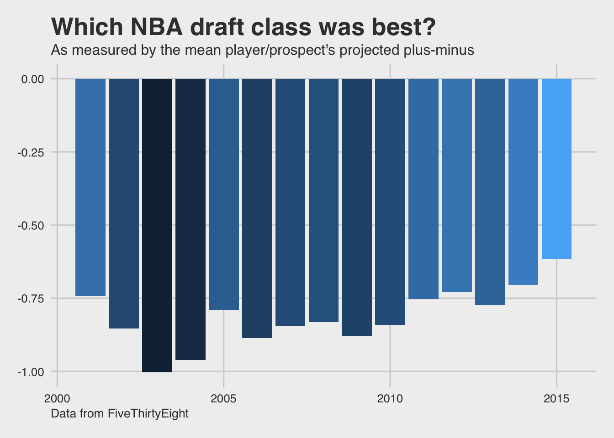

tidyverse
This vignette is based on data collected for the 538 story entitled “Projecting The Top 50 Players In The 2015 NBA Draft Class” by Neil Paine and Zach Bradshaw available here.
First, we load the required packages to reproduce analysis.
library(fivethirtyeight)
# tidyverse includes ggplot2, tibble, tidyr, readr, purrr, dplyr:
library(tidyverse)
library(ggthemes)
library(knitr)
# Turn off scientific notation
options(scipen = 99)The nba_draft_2015 data frame features National Basketball Association players and prospects. Each player has a draft_year that corresponds to the year the player was drafted into the NBA, if at all. We are interested in analyzing the average projected_spm for each draft year. Here, projected_spm corresponds to FiveThirtyEight’s model of projected statistical plus-minus over year 2-5 of the player’s NBA career. Plus-minus is defined by BasketballReference.com as “box score-based metric for evaluating basketball players’ quality and contribution to the team.” It is measured on a per 100 possessions basis to factor out playing time and adjusted so that the score is relative to the average NBA player. Further from BasketballReference, “0.0 is league average, +5 means the player is 5 points better than an average player over 100 possessions (which is about All-NBA level), -2 is replacement level, and -5 is really bad.”
nba_yearly <- nba_draft_2015 %>%
group_by(draft_year) %>%
summarise(mean_proj_spm = mean(projected_spm))
nba_yearly## # A tibble: 15 x 2
## draft_year mean_proj_spm
## <int> <dbl>
## 1 2001 -0.7433745
## 2 2002 -0.8535697
## 3 2003 -1.0037065
## 4 2004 -0.9616403
## 5 2005 -0.7915238
## 6 2006 -0.8855274
## 7 2007 -0.8446639
## 8 2008 -0.8310443
## 9 2009 -0.8784884
## 10 2010 -0.8406320
## 11 2011 -0.7535743
## 12 2012 -0.7290506
## 13 2013 -0.7729383
## 14 2014 -0.7031637
## 15 2015 -0.6158276Now that we have calculated the mean projected plus-minus for each draft year, let’s plot it to better understand which draft class was projected to have the most impact on team success.
ggplot(nba_yearly, aes(x = draft_year, y = mean_proj_spm, fill = mean_proj_spm)) +
geom_col() +
theme_fivethirtyeight() +
labs(title = "Which NBA draft class was best?",
subtitle = "As measured by the mean player/prospect's projected plus-minus",
caption = "Data from FiveThirtyEight") +
theme(legend.position = "none",
plot.title = element_text(face = "bold", size = 20),
plot.subtitle = element_text(size = 12),
plot.caption = element_text(hjust = 0, size = 10))
The overall trend here is that NBA draft classes, on average, have shown an increase in mean projected plus-minus since 2003. Based on this analysis, 2015 is the best draft class since it has the highest mean projected plus-minus of any year. Another way to think of this is that 2015 was the most balanced based on this metric. This plot also shows that the draft classes have tended to be projected as having more impact on team success over time.
So who were the players in that 2003 NBA draft class? What about in 2004 that has the second largest (in magnitude) average projected plus-minus. Let’s explore the top three projected_spm for 2003 and 2004:
nba_draft_2015 %>%
filter(draft_year %in% c(2003, 2004)) %>%
group_by(draft_year) %>%
top_n(projected_spm, n = 3) %>%
select(player, position, draft_year, projected_spm)## # A tibble: 6 x 4
## # Groups: draft_year [2]
## player position draft_year projected_spm
## <chr> <chr> <int> <dbl>
## 1 Andre Iguodala SG 2004 0.7235079
## 2 Luol Deng SF 2004 0.4021089
## 3 Emeka Okafor PF 2004 0.3828638
## 4 Dwyane Wade SG 2003 0.7387024
## 5 Chris Kaman C 2003 0.4069592
## 6 Carmelo Anthony SF 2003 0.3640098If you are familiar with NBA basketball, these names will stick out to you. Dwayne Wade and Carmelo Anthony are perennial all-stars and Andre Iguodala was the 2015 NBA Finals MVP. (Note that LeBron James is not in this data.)
The surprising thing here is that these great players were not able to counter-balance the players with low projected_spm. Remember that the mean was used here so even if the great players were outliers (in the positive direction) they weren’t able to pull the mean in their direction. Also note that not all of the players listed in this data set ended up playing in the NBA or, if they did, potentially only played a small amount of time.